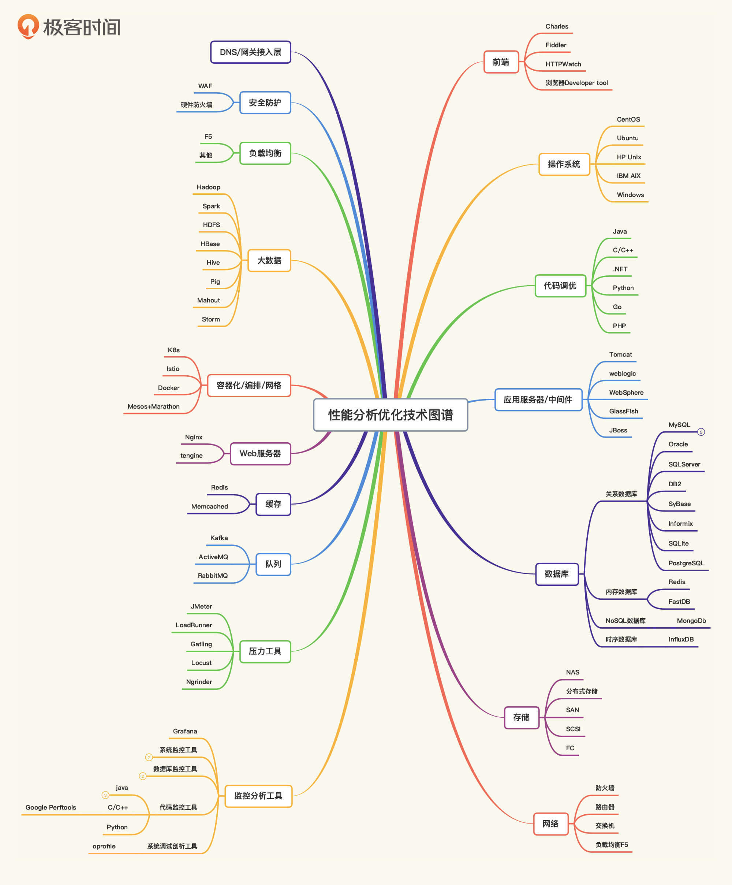
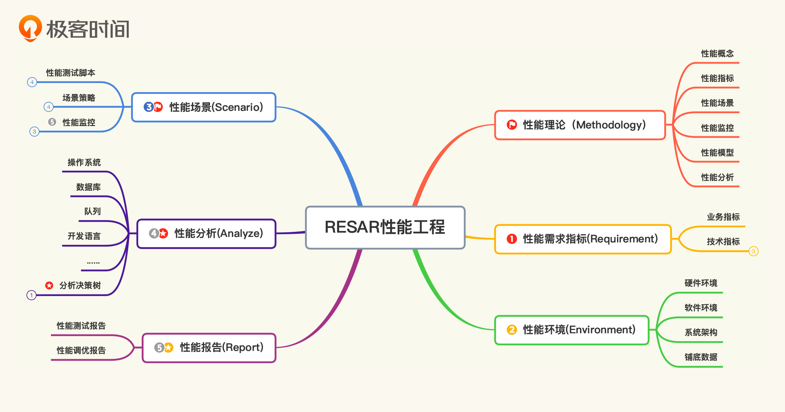

- 00 开篇词 打破四大认知局限，进阶高级性能工程师.md.html
- 01 性能工程：为什么很多性能测试人员无法对性能结果负责？.md.html
- 02 关键概念：性能指标和场景的确定.md.html
- 03 核心分析逻辑：所有的性能分析，靠这七步都能搞定.md.html
- 04 如何构建性能分析决策树和查找瓶颈证据链？.md.html
- 05 性能方案：你的方案是否还停留在形式上？.md.html
- 06 如何抽取出符合真实业务场景的业务模型？.md.html
- 07 性能场景的数据到底应该做成什么样子？.md.html
- 08 并发、在线和TPS到底是什么关系？.md.html
- 09 如何设计全局和定向监控策略？.md.html
- 10 设计基准场景需要注意哪些关键点？.md.html
- 11 打开首页之一：一个案例，带你搞懂基础硬件设施的性能问题.md.html
- 12 打开首页之二：如何平衡利用硬件资源？.md.html
- 13 用户登录：怎么判断线程中的Block原因？.md.html
- 14 用户信息查询：如何解决网络软中断瓶颈问题？.md.html
- 15 查询商品：资源不足有哪些性能表现？.md.html
- 16 商品加入购物车：SQL优化和压力工具中的参数分析.md.html
- 17 查询购物车：为什么铺底参数一定要符合真实业务特性？.md.html
- 18 购物车信息确定订单：为什么动态参数化逻辑非常重要？.md.html
- 19 生成订单信息之一：应用JDBC池优化和内存溢出分析.md.html
- 20 生成订单信息之二：业务逻辑复杂，怎么做性能优化？.md.html
- 21 支付前查询订单列表：如何分析优化一个固定的技术组件？.md.html
- 22 支付订单信息：如何高效解决for循环产生的内存溢出？.md.html
- 23 决定容量场景成败的关键因素有哪些？.md.html
- 24 容量场景之一：索引优化和Kubernetes资源分配不均衡怎么办？.md.html
- 25 容量场景之二：缓存对性能会有什么样的影响？.md.html
- 26 稳定性场景之一：怎样搞定业务积累量产生的瓶颈问题？.md.html
- 27 稳定性场景之二：怎样搞定磁盘不足产生的瓶颈问题？.md.html
- 28 如何确定异常场景的范围和设计逻辑？.md.html
- 29 异常场景：如何模拟不同组件层级的异常？.md.html
- 30 如何确定生产系统配置？.md.html
- 31 怎么写出有价值的性能报告？.md.html
- 我们这个课程的系统是怎么搭建起来的？.md.html
- 结束语 做真正的性能项目.md.html
- 捐赠
结束语 做真正的性能项目
你好，我是高楼。
到这里，我终于完成了第二个课程的编写和更新。我粗略统计了一下，这个课程的正文超过了18万字，环境搭建部分有9万多字，加起来总共有28万字左右，纯手工，无添加。
相比较上一个课程《性能测试实战30讲》，这个课程我感觉写得很辛苦，因为里面所有的案例都不是造出来的，而是我真正在面对一个未知的系统，把遇到的各种问题一个个进行分析得来的。
如果你学过上一个课程就会发现，我的重点是分析单个组件，想要把每个组件的分析逻辑都尽可能地给你讲明白，而各个章节之间其实并没有太多的关联分析，所以这并不足以支撑我们做好性能项目。
因为在一个实际的项目中，我们分析性能瓶颈，在大部分情况下靠分析单个组件是不会有证据链的，除非我们恰好分析到了有问题的组件。因此，从逻辑上来讲，只有关联分析，才能帮助我们形成更有效的思路。这也是为什么，我会在这个课程中用案例的形式，给你展示我整体的分析过程。
当然了，还有一个更重要的原因就是，帮你修炼“内功”。
做性能分析，一定要具备“内功”
我一直在强调，性能应该是一个工程级的活动。但是，现在很多企业都把它做成了测试阶段的一个任务。其结果就是，测试任务做完了，对系统能不能正常运行仍然没有底气；一旦系统上线，运维就陷入疲于奔命的状态，忙着处理各种源源不断的问题。
更要命的是，“测试”行业对工具的关注程度要远远大于性能目标，甚至忽略了自身分析能力的重要性。因此，很多人即使做了测试，也不清楚达没达到目标。这就像你有了倚天剑、屠龙刀，却没有内功，你终究发挥不出它的威力。但是，如果你有九阳神功傍身，那就不一样了，你不会再过分纠结于使用什么样的武器。
因此，在我的RESAR性能工程理念中，我想要告诉你的就是，做性能分析，一定要具备“内功”。
那我们要具备什么样的内功呢？你看到下面这张性能分析优化技术图谱了吗？这个图谱中的技术就是我们要修炼的内功。

你可能会想，这些内容实在太多了，一个人怎么可能做得到？
我不知道你在冒出这个想法之前，有没有做过尝试和努力。其实，你只要在这个图谱中任选一个模块，然后再挑选其中一个技术组件，把它吃透，其他相似的技术组件大多能触类旁通。因为我们的重点是掌握背后的性能分析逻辑，而不是学会使用所有的工具。
就比如我们这个课程中最重要的两个技术逻辑：性能分析决策树和性能瓶颈证据链，这两个技术逻辑就是在教你怎么去思考，怎么去分析性能问题。如果你想学的是工具操作，那完全可以对着工具的手册自行修炼。
其实，对于基础知识和技术细节来说，不管你是看书还是学习课程，我觉得只有一个途径是进步最快的，那就是“动手实践”。
而当下的现状是，大多数人只有在具体的工作中才会动手实践，不工作了就只看看资料。这也是为什么很多人看资料似乎都看懂了，但一动手就废。
就像有些人一边抱怨身上的肥肉长得快，一边又大吃大喝不运动。这样的人，完全是惰性使然，他们只有在真正的危害降临时，才会临时抱佛脚。人的惰性真是不可估量，且难以遏止。
可是你要知道，学习和思考是每一个人都不可逃避的过程，内功也不是突击几日就能练就的。只要我们开始，并且不间断地让自己进步，哪怕一天只学到一个知识点，那么在一段时间之后，我们就会战胜自己的惰性，享受到进步带来的快感。久而久之，那些庞杂的基础知识和技术细节也就烂熟于心了。
有了这些知识储备之后，紧接着你会面临这样一个问题：怎么把它们融会贯通？
这就要靠“思路”了，也就是这些知识在具体运用的过程中产生的方法论。这一点非常重要，因为如果这个阶段你不走过去，就只能永远停留在工具层面。
而我说的这个方法论，其实就是我在这个课程中想要告诉你的“RESAR性能工程”：- 
不过，你要记住，方法论只有落地才有价值，这也是为什么我在这个课程中，尽量把每一个细节都努力写出来，给你一个参考。
从性能目标反推性能工程的落地价值
在你修炼内功的同时，我也希望你能提升对性能的认知，真正明白性能项目的价值。
因为放眼望去，现在的性能市场真的是一片胶着的存在，就像《呼兰河传》中东二道街中央的大泥坑，纵然大部分人都知道泥坑的危害，除了深陷其中的人和热心帮忙的人在努力面对之外，其他人或拍手喝彩、或起哄架秧子，宁愿贴着路边的树根天天走，也没有人考虑去填这个坑。
这种现象非常普遍。在一个企业中，很少有人去计算性能问题导致了多少利润流失；也没有人去计算，因系统性能低下而产生的成本代价。有的企业甚至动用上万的CPU资源（每天的利用率只有不到5%）来维系着心里的安全感；也有的企业一遇到线上性能问题就气急败坏，但救火结束后仍不思悔改……而这些现象都源于对性能的认知不够。
可能有人会说，在性能上花费再多的人力和时间成本，也不能保证出成效。对！这才是关键！到底什么是成效？不就是给生产上的保证吗？性能给出业务容量的保证，才是真正的价值体现。
而现实的情况是，大部分性能人员都做不到这一点，所以性能价值才会不断被轻视。最后，性能项目只能沦为交差的过场，上线的系统该怎么死还怎么死。
我之前评审一个性能标准的时候，开过几次专家组讨论会。会上，大家就“性能项目要不要做调优”这个问题争论不休。有人认为测试周期短，不需要做太多调优；有人认为要求性能工程师理解架构有点赶鸭子上架了；还有人认为性能测试就只是测试阶段中一个短暂的任务，不用过于吹毛求疵……
在这样的会议中，我默默听完了所有人的发言后，说：“我只提一个问题，如果你们能解决这个问题，就可以按你们的思路走。我的问题是，你们的思路可以明确给出系统最大容量是多少这个结论吗？”然后，大家突然都沉默了，会议室里安静得可怕。
这就是很多人对性能的认知。在他们的脑海里，这个结论是根本不可能实现的，因为他们一直从职位的能力范围来看性能这件事情。
如果我们从性能结论（目标）反推性能该如何做的时候，就可以明显地知道，性能不应该受到个人或固定团队的技术能力限制，而应该是从成本和利润损失的角度去思考如何做。
也正因为如此，我在编写那个性能标准的时候，毫不犹豫地加上了“调优”和“线上性能数据环比”的部分，让性能成为一个完整的闭环。
我们这个课程也正是基于这样完整的闭环思路，提出了RESAR性能工程方法论。在这套方法论中，我已经将我能想得到的角度都完整地阐述了。如果你觉得还不够清楚或不够完整，欢迎随时找我讨论。在不动手的范围内争论，我都是可以接受的。
蜕变，必须经历思维转变
在上一个课程上线之后，其实就有不少人找我讨论，说我颠覆了很多人对性能的认识，而且还触碰了一些人敏感的心理承受底线。于是，就有人雄纠纠气昂昂地想找我理论一下性能方法论的问题。
在我耐着性子听完那些漏洞百出的陈词老调之后，我告诉他：如果你能把一个按你说的方法论完全落地的项目展现到我面前，并且没有被问倒，同时又体现了你说的方法论的价值，那我觉得你就是对的；如果你没有这样做过，麻烦让一下，不要消耗我的网络流量。
说真的，我切身在一个个性能项目执行过程中做归纳总结，不是为了和人争论高下的，这种毫无意义并且子无虚有的虚荣心和满足感不是我所追求的。我希望的是，我的方法论能实际落地，并且能体现出性能项目的价值。要是只想提一个语不惊人死不休的话题来引起争论的话，我应该去学学西晋王衍，而不是在这干需要实践出真知的技术行业了。
从性能“测试”到性能“工程”的转变，是每一个做性能的人在蜕变的过程中，都必须经历的思维转变。而性能工程在落地中所体现出的技术价值和业务价值，才是在真正考验性能工程的具体可操作性，脱离了价值的考量终究只是一场虚枉。
在这个课程中，从性能方案、业务模型、场景、数据、环境，到具体的分析逻辑、并发计算、性能监控等一系列落地过程，就是我的性能工程理念想要表达的完整内容，也只有这样，才能帮助你做一个真正的性能项目。
总之，我希望学习这个课程的你，能仔细思考一下我的理念，至于它能发挥出的威力有多大，就要取决于你的基础功底了。也希望你能在不断实践的过程中，丰富自己的思维逻辑，做真正有价值的性能项目，不纠结，不盲从，不退不让，不卑不亢。
在课程的最后，我为你准备了一份结课问卷，希望你能花 1 分钟时间填写一下，我想听一听你对这门课的反馈。只要填写，就有机会获得一顶极简棒球帽或者是 价值 99 元的课程阅码。期待你的畅所欲言。
© 2019 - 2023 Liangliang Lee. Powered by gin and hexo-theme-book.